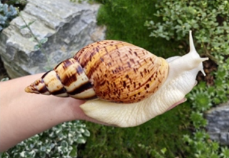

Jakie minerały są ważne dla ślimaków?
Wprowadzenie do potrzeb mineralnych ślimaka afrykańskiego
Ślimak afrykański, znany również jako
Achatina fulica, to jeden z największych gatunków ślimaków lądowych, który jest popularny zarówno jako zwierzę domowe, jak i źródło białka w niektórych kulturach. Aby zadbać o zdrowie i dobrostan tych stworzeń, niezwykle istotne jest dostarczenie im odpowiednich składników odżywczych, w tym minerałów. Minerały odgrywają kluczową rolę w procesach metabolicznych, wzroście oraz produkcji muszli. Właściwe zbilansowanie diety jest kluczowe dla ich prawidłowego rozwoju oraz zapobiegania chorobom.
Kluczowe minerały dla ślimaka afrykańskiego
Jednym z najważniejszych minerałów dla ślimaka afrykańskiego jest
wapń. Wapń jest niezbędny do budowy muszli, a jego niedobór może prowadzić do osłabienia i deformacji muszli, co z kolei może zagrażać życiu ślimaka. Dodatkowo, wapń wspiera prawidłowe funkcjonowanie układu nerwowego oraz mięśniowego. W diecie ślimaka afrykańskiego wapń można dostarczyć poprzez dodawanie zmielonej skorupy jajek, muszli ostryg lub specjalnych suplementów wapniowych dostępnych w sklepach zoologicznych.
Inne minerały wspierające zdrowie ślimaka
Oprócz wapnia, ważnymi minerałami dla ślimaka afrykańskiego są
magnez i
fosfor. Magnez wspiera wiele procesów biochemicznych i jest istotny dla zdrowia muszli, a jego niedobór może prowadzić do osłabienia organizmu.
Fosfor natomiast jest niezbędny do produkcji energii oraz jest kluczowym składnikiem DNA i RNA. Te minerały można znaleźć w różnych naturalnych źródłach, takich jak zielone liście, warzywa korzeniowe, a także w niektórych rodzajach pokarmu komercyjnego przeznaczonego dla ślimaków. Dbanie o zróżnicowaną dietę, bogatą w te minerały, pomoże utrzymać ślimaka afrykańskiego w dobrej kondycji zdrowotnej.
Kliknij mnie i dowiedz się jakich minerałów potrzebuje :)
